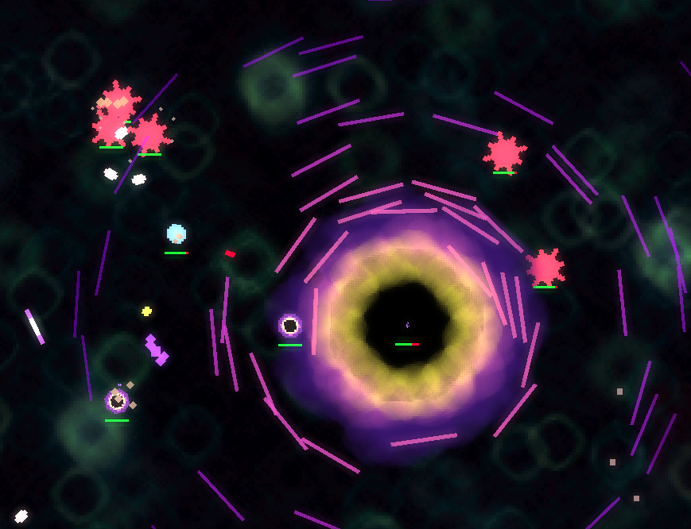

Fantasy Jump
Synopsis
Fantasy Jump is a prototype game made by Glenn in participation of a school literary project. It is a simple video game featuring a blue jumper ball, several floating spike balls, and the "Leaks." The artwork is mostly 2D. Sprites are rendered 3 times bigger, making it having the pixel-y effect. Controls are mostly using mouse, with keyboard keys just used to either exit the game or toggle fullscreen. The game itself is done in 30 days. You can download the Windows x64 release here!
How to Play
You play as the blue jumper ball. Maneuver carefully among the spike ball colony, or go full speed as you hunt down Leaks. You release propulsion to move, either with strong or weak force depending on your mouse-hold duration.
Your main objective is to terminate all 3 Leaks; yellowish-purple swirling black hole looking things with extensive contact damage and health. Don't hit these things with your body! Leaks shoot smaller sentient bullets which also shoot you with high velocity damaging lasers.
How it's Made
FantasyJump v1.0.0 is written in C++, compiled and linked with Standard C++ 17 libraries, and using OpenGL as the graphics manager. As for the external libraries, I used:
- GLEW for wrangling newer OpenGL features to be used with OpenGL 3.0.0.
- GLM for fast inlined mathematics around OpenGL functions.
- SDL2 as the main framework.
- SDL2_image for reading image files and turn them into in-memory pixel maps.
- SDL2_mixer for playing the audio chunks; in this case I used Vorbis to load the audios.
- Vorbis for reading OGG audio files and turn them into in-memory playable audio chunks.
- EnTT as the main library for managing Entity Component System.
- Box2D as the main 2-dimensional physics engine.
You can hypothetically use any C/CXX compiler to build this project, since I used CMake as the building toolchain here. I highly recommend using MinGW for developers on Windows though.
Inside the Game
The instruction dialog that appears when you run the game. This is only shown once per session. |
|
Here is what your typical first scene would be. A lonesome fantasy world, filled with several floating spike balls that can damage you, where you live as a bouncing blue ball. |
|
|  | The Leak is seen here, along with the sentient bullet entities it shoots. Tough enemy, might take a while to defeat it. Don't give up! |
Boom. |